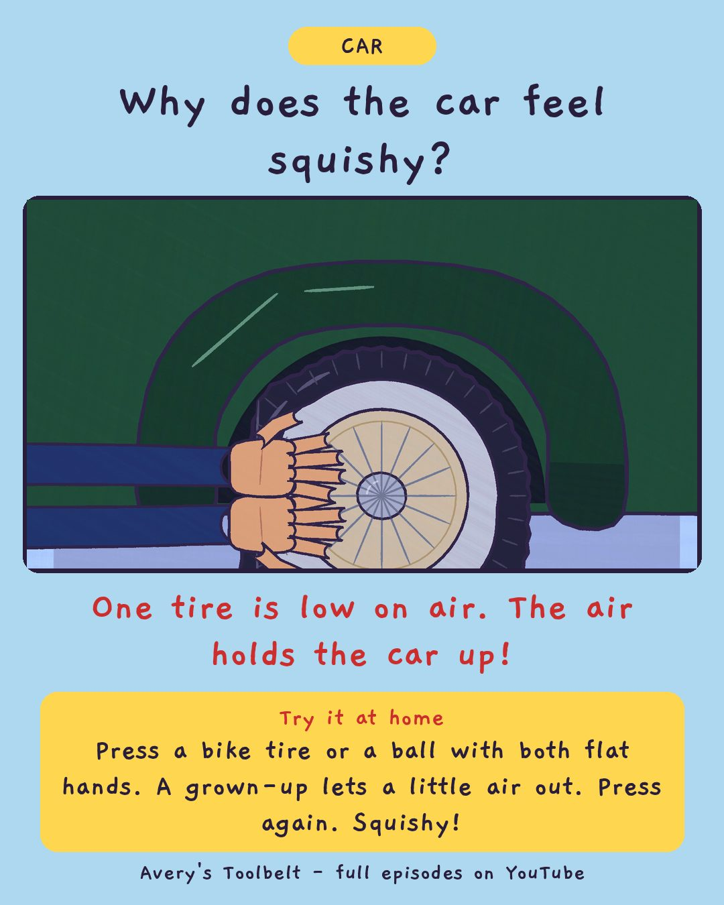

SquishyHow Do You Find a Soft Tire?
軟軟的

Why does the car feel squishy?
One tire is low on air. The air holds the car up!
Try it at home
Press a bike tire or a ball with both flat hands. A grown-up lets a little air out. Press again. Squishy!
Free printable coloring page (PDF) Watch the full episode on YouTubeAbout this episode, for grown-ups
Mom's car is at the shop, so Betsy, the family's 1937 car, does the school run for the first time. From her booster seat behind Dad, Avery feels something - a little pull, a little lean - and nobody else can feel it at all.
She is right, and being right doesn't help, because Dad can't go looking for a thing nobody can describe. Meanwhile Gus discovers that if he leans like a sailor in a storm, the feeling gets bigger.
What children find out: air is what holds up the whole car. One tire can look fine and still be soft - and you only find it by pressing all four the same way, because soft only means something next to the other three.
For grown-ups: an episode about turning a feeling into something a grown-up can check. "Right's good. Now make it into something I can go and check."